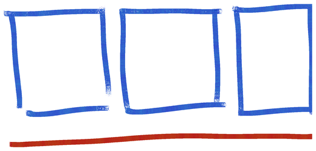
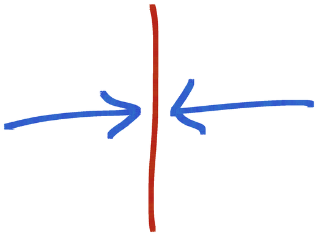
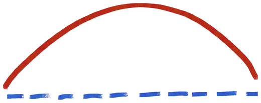
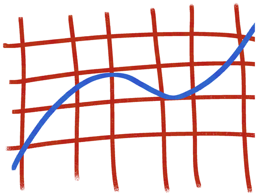

Communication is stewardship
We care for each touchpoint because each one shapes how people experience the mission.
Every church has a God-given story worth telling.
I help churches and mission-driven organizations steward that story through communication, brand, design, and the systems that hold them together.
The goal is alignment between what you believe, what you say, and what people experience.
The work begins before the brief, the first sketch, or the first frame of video. It begins with the story God has given you to tell and the people He is calling you to serve.
Long before someone walks through the front door or meets the pastor, they have already begun to experience your church. As they drive by, visit your website, watch a video, encounter a social post, or receive an email, every touchpoint tells them who you are and whether a place has been prepared for them.
Communication is one of the ways we begin caring for people before we know who they are. Good design prepares a place for them. Clear systems help us keep that promise as the work grows.
The goal is not simply better-looking work. It is alignment between what you believe, what you say, and what people experience.
THE RIGHT STORY, TOLD THE RIGHT WAY.
Every project, essay, and framework here flows from a short list of convictions. These aren’t taglines. They’re the questions every decision has to answer. The work below is what they look like in practice.
We care for each touchpoint because each one shapes how people experience the mission.
Good design removes unnecessary work and prepares a place for people.

The mission declares the story. The experience confirms or contradicts it.

Brand gives a team a shared standard for making decisions together.

Decide what story people should experience before choosing tactics.

Healthy systems give creative people room to think, make, collaborate, and rest.
Preferences have a place at the table, but mission makes the final call.
We steward the story by telling it clearly and investing what we have been given.
Notes on communication, brand, design, creative leadership, and the systems that hold them together. They come from more than twenty years of making the work, leading teams, solving problems, and learning that clarity is one of the ways we care for people.
Maybe your story is clear, but the way people experience it is not. Maybe your team is doing good work inside systems that make everything harder than it needs to be. Or maybe you know something needs to change, but you are not sure where to begin. I would love to hear what you are working through. No pitch and no packages, just a conversation about the story God has given you to tell and how we might help people experience it more clearly.
Brent Young · Montgomery, Texas
PHONE: (562) 964-4562
EMAIL: PBRENTYOUNG@GMAIL.COM